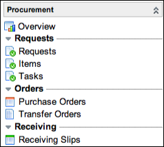

Procurement
| |
Note: This article applies to Fuji. For more current information, see Procurement at http://docs.servicenow.com
The ServiceNow Wiki is no longer being updated. Please refer to http://docs.servicenow.com for the latest product documentation. |
Contents
1 Overview
Procurement managers can use the Procurement application to create purchase orders and to obtain items for fulfilling service catalog requests. Procurement offers the ability to:
- Track service catalog requests
- Create and manage purchase orders
- Create and manage transfer orders
- Receive assets
Procurement is available starting with the Calgary release.
2 Procurement Workflows
Procurement uses the following workflows:
- In the Service Catalog Request workflow, items ordered from the service catalog that cost over one thousand dollars require approval.
{kind=link}
- In the Source Request workflow, catalog tasks are created so a procurement manager can source the item by creating a transfer order or purchase order.
{kind=link}
These workflows are provided in the base system. You can edit these workflows in the graphical workflow editor or create a workflow to better fit your organization's procurement needs.
3 Roles
The Procurement application uses the following roles.
| Role Title | Role Name | Description | ||
|---|---|---|---|---|
| Procurement administrator | procurement_admin | Procurement administrators set up and manage the procurement process. | ||
| Procurement user | procurement_user | Procurement users use the Procurement application.
|
4 Menus and Modules
Activating procurement adds the Procurement application menu and the following modules to the application navigator.
|  |
|
{kind=link}
5 Activating Procurement
An administrator can activate the Procurement plugin.
| Click the plus to expand instructions for activating a plugin. |
|---|
|
If you have the admin role, use the following steps to activate the plugin.
|
6 Enhancements
6.1 Dublin
- A procurement_admin role is available. Only users with the procurement_admin role can customize the Procurement Overview page.
- In the Receive Purchase Order dialog box:
- When asset tag input is allowed, the number of Asset tag and S/N lines is updated dynamically based on the value entered in the Qty Received field.
- When receiving purchase orders with only one line item, the Received check box is automatically selected.
- A Reserve check box can be selected to reserve non-consumable items for the user specified in the For User field.
- For assets created from purchase order items, the following field values are automatically set on each asset record.
- For assets created either before or at the time of receiving the items:
- The Vendor field is set to the vendor specified on the purchase order record.
- The Acquisition method field is set to Purchase for non-consumable assets.
- When the Reserve check box is selected in the Receive Purchase Order dialog box:
- The State field is set to In stock.
- The Substate field is set to Reserved.
- When a hardware CI is created during the procurement process, the system populates the Configuration item field on the associated catalog task and requested item records.
- Purchase order line items now have a List price field to track the retail price of an item.